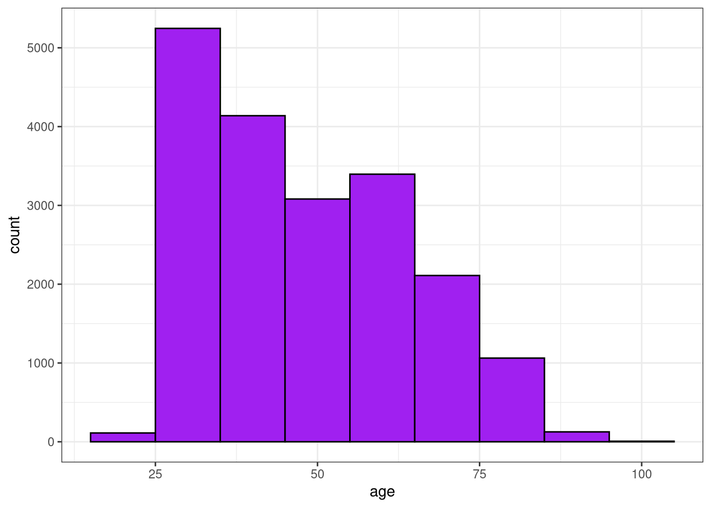
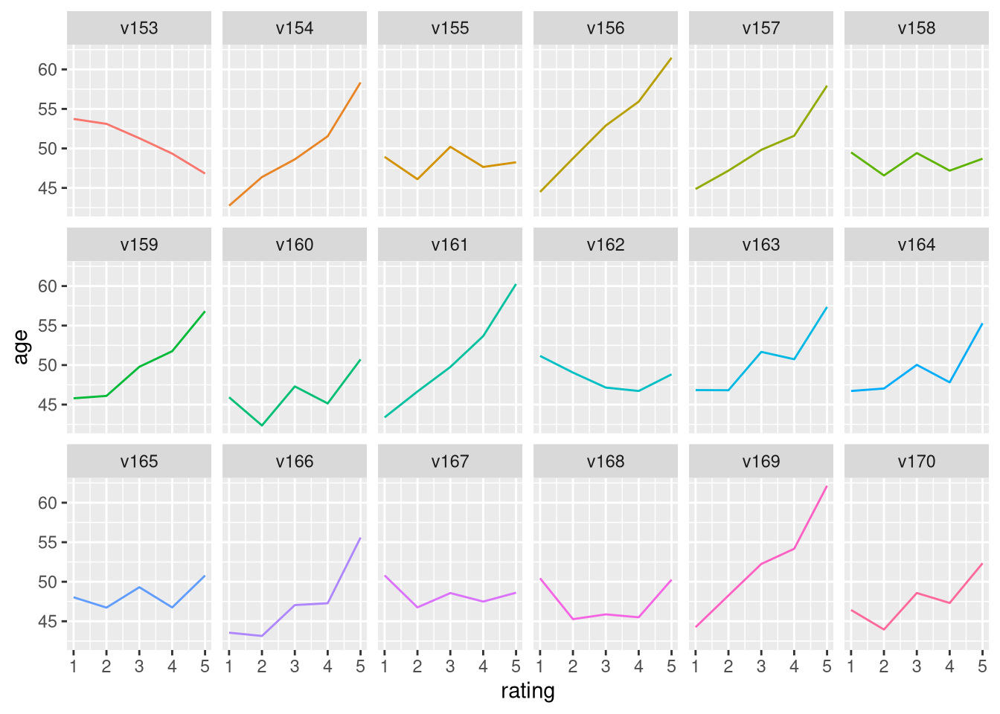

library(tidyverse)
library(tidymodels)
sisters67 <- read_csv("../Data/sisters.csv")But what do the nuns think?
This case study uses an extensive survey of Catholic nuns fielded in 1967 to once more put your practical machine learning skills to use. You will predict the age of these religious women from their responses about their beliefs and attitudes.
Surveying Catholic sisters in 1967
You have made it to the last case study of our course! 🎉 It is a particularly compelling one, where we are going to practice some advanced skills in modeling.
In this case study, you will predict the age of Catholic nuns from their answers on a survey fielded in 1967 focusing on questions about social and religious issues. What kind of model will you build? To predict a continuous, numeric quantity like age, use regression models.
Visualize the age distribution
The first step before you start modeling is to explore your data, and we are going to spend a little more time on this step in this last case study. To start with, check out the distribution of ages for the respondents in this survey. 📊 (Keep in mind throughout this case study that the data you have in your environment is one quarter of the real survey data.)
Instructions
- Call
glimpse()onsisters67to take a look at the structure of the data. Notice how many columns there are, and what their characteristics are.
# View sisters67
glimpse(sisters67)Rows: 19,278
Columns: 67
$ age <dbl> 60, 40, 30, 40, 70, 70, 30, 50, 30, 30, 60, 60, 50, 70, 30, 60,…
$ sister <dbl> 89986, 37950, 117200, 104452, 23709, 51361, 101419, 23722, 1016…
$ v116 <dbl> 5, 2, 4, 5, 5, 4, 5, 4, 4, 4, 4, 4, 5, 5, 4, 5, 4, 2, 4, 4, 2, …
$ v117 <dbl> 2, 1, 1, 4, 5, 4, 2, 1, 1, 1, 1, 2, 2, 1, 1, 3, 1, 2, 5, 1, 1, …
$ v118 <dbl> 3, 5, 5, 5, 5, 1, 4, 2, 2, 5, 3, 4, 1, 5, 4, 4, 4, 1, 1, 5, 5, …
$ v119 <dbl> 1, 5, 5, 4, 5, 1, 2, 1, 4, 4, 5, 3, 4, 5, 2, 4, 5, 4, 4, 5, 5, …
$ v120 <dbl> 5, 1, 4, 2, 5, 4, 1, 2, 5, 1, 1, 5, 1, 1, 2, 5, 4, 4, 5, 1, 1, …
$ v121 <dbl> 1, 4, 1, 4, 2, 1, 1, 5, 5, 1, 1, 5, 3, 1, 2, 4, 4, 4, 5, 4, 1, …
$ v122 <dbl> 1, 1, 3, 1, 4, 4, 1, 2, 1, 2, 1, 3, 1, 1, 2, 1, 1, 2, 1, 5, 3, …
$ v123 <dbl> 2, 5, 5, 3, 4, 4, 5, 5, 4, 5, 5, 3, 5, 5, 4, 3, 5, 5, 3, 5, 5, …
$ v124 <dbl> 1, 1, 1, 4, 4, 1, 1, 4, 2, 2, 3, 5, 1, 1, 1, 4, 4, 2, 4, 4, 2, …
$ v125 <dbl> 4, 5, 1, 2, 5, 1, 2, 5, 5, 4, 5, 5, 2, 5, 5, 5, 1, 4, 5, 5, 5, …
$ v126 <dbl> 1, 4, 1, 1, 5, 1, 1, 4, 2, 1, 3, 4, 1, 1, 1, 4, 1, 1, 5, 1, 1, …
$ v127 <dbl> 1, 2, 2, 2, 4, 2, 1, 4, 2, 4, 4, 4, 4, 1, 1, 5, 2, 4, 4, 4, 1, …
$ v128 <dbl> 5, 5, 1, 4, 4, 1, 5, 1, 4, 4, 4, 3, 2, 5, 2, 4, 2, 2, 3, 4, 1, …
$ v129 <dbl> 1, 5, 5, 5, 5, 1, 4, 5, 5, 1, 5, 3, 5, 5, 5, 4, 5, 5, 5, 4, 5, …
$ v130 <dbl> 5, 1, 1, 2, 2, 5, 1, 4, 2, 2, 1, 5, 1, 1, 2, 5, 4, 5, 4, 4, 1, …
$ v131 <dbl> 3, 4, 2, 4, 4, 3, 2, 3, 4, 4, 3, 3, 3, 4, 2, 2, 4, 4, 2, 4, 5, …
$ v132 <dbl> 5, 5, 4, 3, 5, 1, 5, 5, 5, 5, 5, 4, 5, 5, 5, 5, 5, 5, 4, 5, 1, …
$ v133 <dbl> 2, 4, 1, 2, 4, 1, 5, 2, 4, 1, 3, 3, 5, 1, 2, 4, 4, 4, 5, 4, 1, …
$ v134 <dbl> 3, 3, 4, 4, 2, 4, 3, 5, 3, 4, 3, 3, 5, 5, 4, 4, 5, 4, 3, 2, 5, …
$ v135 <dbl> 4, 2, 5, 3, 4, 1, 5, 5, 2, 4, 5, 2, 5, 5, 4, 4, 5, 5, 1, 5, 5, …
$ v136 <dbl> 1, 4, 2, 4, 2, 4, 4, 2, 2, 1, 3, 4, 1, 1, 4, 4, 4, 2, 1, 2, 1, …
$ v137 <dbl> 3, 2, 1, 2, 4, 5, 1, 5, 2, 1, 1, 2, 1, 1, 1, 2, 1, 1, 2, 1, 1, …
$ v138 <dbl> 5, 1, 1, 1, 2, 1, 1, 1, 1, 1, 2, 3, 1, 1, 1, 3, 1, 1, 1, 1, 1, …
$ v139 <dbl> 5, 1, 1, 2, 2, 5, 1, 4, 1, 1, 2, 5, 4, 1, 1, 2, 1, 1, 2, 1, 1, …
$ v140 <dbl> 5, 1, 1, 4, 4, 4, 1, 1, 2, 1, 1, 3, 1, 1, 4, 5, 1, 5, 5, 3, 4, …
$ v141 <dbl> 5, 5, 5, 4, 5, 4, 5, 5, 3, 3, 3, 2, 3, 5, 3, 2, 5, 5, 1, 5, 5, …
$ v142 <dbl> 3, 2, 1, 4, 2, 2, 4, 1, 2, 1, 3, 3, 3, 1, 2, 2, 1, 2, 1, 4, 1, …
$ v143 <dbl> 4, 5, 5, 3, 4, 1, 5, 4, 4, 5, 4, 3, 5, 5, 2, 5, 5, 4, 5, 5, 5, …
$ v144 <dbl> 1, 1, 1, 1, 1, 5, 1, 1, 1, 1, 2, 4, 1, 1, 1, 1, 5, 1, 1, 2, 1, …
$ v145 <dbl> 5, 5, 2, 4, 5, 5, 1, 4, 4, 2, 2, 5, 5, 1, 4, 5, 5, 1, 5, 4, 2, …
$ v146 <dbl> 3, 5, 4, 2, 5, 1, 1, 1, 4, 5, 4, 4, 4, 5, 5, 2, 5, 4, 5, 5, 5, …
$ v147 <dbl> 4, 4, 1, 2, 1, 4, 4, 4, 2, 3, 3, 1, 1, 1, 1, 2, 5, 1, 4, 3, 1, …
$ v148 <dbl> 1, 3, 1, 3, 2, 2, 1, 1, 3, 1, 3, 3, 3, 4, 3, 4, 1, 1, 1, 1, 1, …
$ v149 <dbl> 3, 2, 1, 4, 4, 4, 4, 4, 4, 2, 3, 3, 3, 1, 2, 2, 2, 4, 3, 4, 4, …
$ v150 <dbl> 4, 2, 1, 2, 2, 4, 2, 1, 2, 1, 5, 5, 2, 5, 1, 5, 1, 2, 4, 5, 3, …
$ v151 <dbl> 2, 5, 2, 4, 5, 5, 5, 4, 4, 2, 3, 4, 2, 5, 2, 5, 2, 4, 4, 4, 5, …
$ v152 <dbl> 3, 1, 1, 4, 4, 5, 4, 1, 2, 1, 3, 3, 1, 1, 1, 5, 1, 2, 5, 4, 1, …
$ v153 <dbl> 5, 5, 5, 1, 2, 4, 5, 4, 3, 5, 3, 1, 1, 1, 5, 5, 5, 5, 4, 4, 5, …
$ v154 <dbl> 5, 1, 1, 3, 5, 5, 2, 1, 4, 1, 3, 1, 5, 1, 1, 5, 4, 1, 5, 4, 1, …
$ v155 <dbl> 4, 3, 4, 5, 5, 1, 5, 4, 4, 4, 4, 3, 5, 5, 2, 5, 5, 5, 4, 5, 5, …
$ v156 <dbl> 4, 1, 1, 1, 4, 4, 1, 1, 1, 1, 2, 4, 1, 1, 1, 1, 5, 1, 1, 2, 1, …
$ v157 <dbl> 2, 2, 1, 2, 2, 5, 5, 5, 4, 1, 3, 3, 1, 1, 1, 5, 4, 1, 4, 5, 2, …
$ v158 <dbl> 3, 4, 4, 4, 5, 5, 2, 5, 4, 4, 3, 3, 4, 5, 4, 4, 3, 4, 5, 4, 3, …
$ v159 <dbl> 5, 2, 1, 2, 2, 5, 5, 3, 4, 1, 3, 3, 3, 1, 1, 2, 2, 1, 5, 1, 1, …
$ v160 <dbl> 3, 5, 4, 5, 5, 5, 5, 5, 5, 1, 3, 3, 5, 5, 5, 5, 5, 4, 4, 5, 4, …
$ v161 <dbl> 5, 4, 1, 2, 4, 1, 1, 3, 2, 1, 1, 2, 1, 1, 2, 5, 3, 2, 4, 1, 1, …
$ v162 <dbl> 2, 5, 5, 4, 4, 1, 5, 4, 5, 5, 3, 5, 5, 1, 4, 4, 4, 5, 3, 5, 5, …
$ v163 <dbl> 4, 1, 1, 4, 2, 1, 1, 1, 4, 1, 1, 5, 1, 1, 1, 5, 1, 1, 1, 4, 1, …
$ v164 <dbl> 4, 1, 1, 5, 2, 1, 1, 1, 4, 1, 4, 5, 1, 1, 4, 5, 1, 1, 4, 5, 1, …
$ v165 <dbl> 3, 4, 1, 1, 2, 4, 1, 5, 2, 1, 1, 3, 3, 1, 1, 3, 1, 2, 1, 1, 1, …
$ v166 <dbl> 5, 5, 1, 2, 2, 1, 2, 3, 3, 3, 3, 5, 4, 1, 4, 5, 4, 4, 5, 5, 4, …
$ v167 <dbl> 5, 1, 5, 4, 2, 1, 4, 3, 1, 4, 4, 4, 5, 1, 2, 4, 4, 4, 3, 4, 4, …
$ v168 <dbl> 3, 5, 5, 5, 5, 4, 5, 4, 5, 5, 5, 3, 3, 5, 4, 5, 5, 4, 2, 5, 3, …
$ v169 <dbl> 2, 1, 1, 4, 1, 1, 1, 4, 1, 1, 5, 5, 1, 5, 2, 1, 1, 2, 1, 1, 1, …
$ v170 <dbl> 5, 4, 3, 3, 4, 1, 1, 4, 4, 4, 3, 3, 5, 5, 4, 2, 4, 2, 4, 4, 4, …
$ v171 <dbl> 5, 2, 1, 5, 5, 1, 5, 1, 5, 4, 5, 5, 5, 5, 4, 5, 5, 4, 5, 4, 5, …
$ v172 <dbl> 5, 5, 5, 2, 2, 4, 5, 5, 5, 1, 5, 5, 2, 5, 2, 5, 5, 1, 5, 5, 2, …
$ v173 <dbl> 4, 4, 1, 2, 5, 1, 1, 5, 1, 4, 1, 3, 1, 1, 4, 1, 4, 1, 2, 1, 1, …
$ v174 <dbl> 3, 5, 1, 1, 4, 1, 5, 1, 3, 3, 3, 4, 5, 1, 4, 4, 4, 4, 5, 5, 5, …
$ v175 <dbl> 2, 2, 1, 4, 2, 5, 1, 3, 4, 1, 1, 5, 2, 1, 2, 5, 2, 4, 1, 1, 1, …
$ v176 <dbl> 3, 2, 1, 4, 4, 1, 5, 4, 3, 1, 3, 2, 4, 5, 4, 5, 5, 4, 5, 3, 1, …
$ v177 <dbl> 5, 4, 1, 5, 4, 5, 5, 5, 2, 1, 4, 2, 5, 5, 2, 5, 5, 4, 5, 4, 5, …
$ v178 <dbl> 1, 5, 2, 4, 4, 1, 1, 3, 4, 1, 4, 5, 1, 1, 4, 5, 5, 4, 5, 5, 2, …
$ v179 <dbl> 1, 4, 1, 5, 2, 5, 5, 1, 5, 1, 4, 5, 2, 4, 2, 5, 4, 1, 4, 4, 3, …
$ v180 <dbl> 4, 4, 2, 4, 2, 5, 4, 1, 3, 1, 3, 4, 2, 4, 4, 4, 4, 2, 2, 4, 4, …- Plot a histogram of
age.
# Plot the histogram
ggplot(sisters67, aes(x = age)) +
geom_histogram(binwidth = 10, color = "black", fill = "purple") +
theme_bw()
Tidy the survey data
Embracing tidy data principles is a powerful option for exploratory data analysis. When your data is tidy, you can quickly iterate in getting to know your data better and making exploratory plots. Let’s transform this wide data set into a tidy data frame with one observation per row, and then check out some characteristics of this subset of the original survey.
Using select()
There is a column called sister in this dataset that is an identifier for each survey respondent. We are removing this column in the exercise using select().
Instructions
- Use the
pivot_longer()function to transform the wide data set with each survey question in a separate column to a narrow, tidy data set with each survey question in a separate row.
# Tidy the data set
tidy_sisters <- sisters67 |>
select(-sister) |>
pivot_longer(-age, names_to = "question", values_to = "rating")- View the structure of this tidy data set using
glimpse().
# Print the structure of tidy_sisters
glimpse(tidy_sisters)Rows: 1,253,070
Columns: 3
$ age <dbl> 60, 60, 60, 60, 60, 60, 60, 60, 60, 60, 60, 60, 60, 60, 60, 6…
$ question <chr> "v116", "v117", "v118", "v119", "v120", "v121", "v122", "v123…
$ rating <dbl> 5, 2, 3, 1, 5, 1, 1, 2, 1, 4, 1, 1, 5, 1, 5, 3, 5, 2, 3, 4, 1…Next look at question agreement overall.
Instructions
Group by age and summarize the rating column to see how the overall agreement with all questions varied by age.
# Overall agreement with all questions varied by age
tidy_sisters |>
group_by(age) |>
summarize(rating = mean(rating, na.rm = TRUE))# A tibble: 9 × 2
age rating
<dbl> <dbl>
1 20 2.85
2 30 2.81
3 40 2.84
4 50 2.95
5 60 3.11
6 70 3.26
7 80 3.43
8 90 3.52
9 100 3.79- Count the
ratingcolumn to check out how many respondents agreed or disagreed overall.
# Number of respondents agreed or disagreed overall
tidy_sisters |>
count(rating)# A tibble: 5 × 2
rating n
<dbl> <int>
1 1 324374
2 2 210312
3 3 161765
4 4 277986
5 5 278633Exploratory data analysis with tidy data
You just created a tidy version of this survey data, which allows you to quickly ask and answer many different kinds of questions in exploratory data analysis.
Visualize agreement with age
The tidied version of the survey data that you constructed is available in your environment. You have many options at your fingertips with this tidy data now. Make a plot that shows how agreement on a subset of the questions changes with age. 📉 In this exercise, we are using filter() to subset the data to just a subset of the questions on the survey to look at.
Instructions
Group by two variables,
questionandrating, so you can calculate an averageagefor each answer to each question.Summarize for each grouping to find an average
age.Choose the correct
geomto make a line plot.
# Visualize agreement with age
tidy_sisters |>
filter(question %in% paste0("v", 153:170)) |>
group_by(question, rating) |>
summarize(age = mean(age, na.rm = TRUE)) |>
ggplot(aes(rating, age, color = question)) +
geom_line(show.legend = FALSE) +
facet_wrap(~question, nrow = 3) 
Trainingm validation, and testing data
It’s time to split your data into different sets now. You’ve done this three times already in this course, but in this last case study we are also going to create a validation set. Using a validation set is a good option when you have enough data (otherwise, you can use resampling).
sisters_select <- read_csv("../Data/sisters.csv") |>
select(-sister)Instructions
Create two data partitions:
Specify one to split between testing and everything else.
Specify another one to split between validation and training.
# Split off the testing set
set.seed(123)
sisters_split <- initial_split(sisters_select, strata = age)
sisters_other <- training(sisters_split)
sisters_test <- testing(sisters_split)
# Create the validation split
set.seed(123)
sisters_val <- validation_split(sisters_other, strata = age)
glimpse(sisters_val)Rows: 1
Columns: 2
$ splits <list> [<val_split[10841 x 3616 x 14457 x 66]>]
$ id <chr> "validation"Using your validation set
This new validation set you just created will be used to compare models you have trained and choose which one to use. A validation test is used to compare models or tune hyperparameters.
Tune model hyperparameters
You have prepared training, validation, and test sets and now it’s time to build predictive models.
In this last case study, you are going to work with model hyperparameters for the first time in this course. Some model parameters cannot be learned directly from a dataset during model training; these kinds of parameters are called hyperparameters. 💥 Some examples of hyperparameters include the number of predictors that are sampled at splits in a tree-based model (we call this mtry in tidymodels) or the learning rate in a boosted tree model (we call this learn_rate).
Instead of learning these kinds of hyperparameters during model training, we can estimate the best values for these values by training many models on a resampled data set (like the validation set you just created) and measuring how well all these models perform. This process is called tuning.
You can identify which parameters to tune() in a model specification as shown here. Let’s build a decision tree model to predict age for our nuns, and tune the cost complexity and the maximum tree depth.
What is a model hyperparameter?
tree_spec <- decision_tree(
cost_complexity = tune(),
tree_depth = tune()
) |>
set_engine("rpart") |>
set_mode("regression")Model hyperparameters aren’t the only things you can tune. You can also tune steps in your preprocessing pipeline. This recipe has two steps:
First, this recipe centers and scales all those numeric predictors we have in this dataset, cataloging the nuns’ responses to the survey questions.
Second, this recipe implements principal component analysis on these same predictors. Except… this recipe identifies that we want to implement PCA and we aren’t sure how many predictors we should use. We want to choose the best 🏆 number of predictors.
sisters_recipe <- recipe(age ~ ., data = sisters_other) |>
step_normalize(all_predictors()) |>
step_pca(all_predictors(), num_comp = tune())You have a couple of options for how to choose which possible values for the tuning parameters to try. One option is to set up a grid of possible parameter values.
Here, we are using default ranges for cost complexity and tree depth, and we are going to try 3 to 12 principal components. When we set levels = 5, we are saying we want five levels for each parameter, which means there will be 125 (5 * 5 * 5) total models to try.
You can use the function tune_grid() to fit all these models; you can tune either a workflow or a model specification with a set of resampled data, such as the validation set you created (i.e. a single resample).
Grid of tuning parameters
grid_regular(num_comp(c(3, 12)),
cost_complexity(),
tree_depth(),
levels = 5)# A tibble: 125 × 3
num_comp cost_complexity tree_depth
<int> <dbl> <int>
1 3 0.0000000001 1
2 5 0.0000000001 1
3 7 0.0000000001 1
4 9 0.0000000001 1
5 12 0.0000000001 1
6 3 0.0000000178 1
7 5 0.0000000178 1
8 7 0.0000000178 1
9 9 0.0000000178 1
10 12 0.0000000178 1
# ℹ 115 more rowsYou train these 125 possible models on the training data and use the validation data to compare all the results in terms of performance. We won’t use the testing data until the very end of our modeling process, when we use it to estimate how our model will perform on new data.
Why three data partitions?
For some modeling use cases, an approach with three data partitions is overkill, perhaps a bit too much, but if you have enough data that you can use some of these powerful machine learning algorithms or techniques, the danger you face is underestimating your uncertainty for new data if you estimate it with data that you used to pick a model.
To get a reliable estimate from tuning, for example, you need to use another heldout dataset for assessing the models, either a validation set or a set of simulated datasets created through resampling.
Why three data partitions? Don’t overestimate how well your model is performing! 🙅
Tune model hyperparameters
This dataset of extensive survey responses from Catholic nuns in the 1960s is a great demonstration of all of these issues. You will use your validation set to find which values of the parameters (cost complexity, tree depth, and number of principal components) result in the highest R-squared and lowest RMSE. Notice here that we get the best results with a tree depth of 4 and 5 principal components.
As you work through the final set of exercises, you will see all of this come together, along with all the other practical predictive modeling skills we’ve explored in this course.
Identify tuning parameters
It’s time to build a modeling workflow() for this last dataset. We aren’t going to fit this dataset just once, but instead many times! We are going to use this workflow() to tune hyperparameters both in our model specification and our preprocessing recipe.
Instructions
Let’s start with our preprocessing tuning.
Add two preprocessing steps to this recipe, first to normalize and them to implement PCA.
Specify that we want to
tune()the number of principal components.
sisters_recipe <- recipe(age ~ ., data = sisters_other) |>
step_normalize(all_predictors()) |>
step_pca(all_predictors(), num_comp = tune())
sisters_recipe